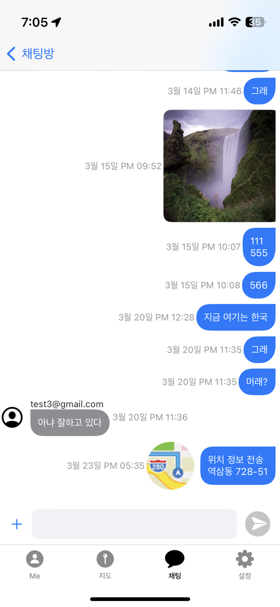

IamHere(나~여기, 나여기)
필요시 위치정보를 안전하게 공유하여, 향후 예상되는 위험으로 부터 현재를 안심할 수 있는 최소한의 대책으로 위치공유, 소통 및 어린이를 대상으로 한 보호장소 지정으로 부모님은 자녀의 활동에 안도감을 줄 것으로 기대합니다.
By safely sharing location information when necessary, we hope that parents will feel at ease with their children's activities through location sharing, communication, and designation of protective locations for children as a minimum measure to provide peace of mind from future risks.

기본적인 기능
위치정보를 이용하여 다양한 방식으로 활용을 할 수 있습니다.
1. 친구,자녀,부모가 상대방의 위치정보를 요청하면, 위치 제공자가 메시지를 확인 및 동의하여 자신의 위치를 제공합니다.
2. 부모가 자녀의 위치 정보 확인 부분과 자녀가 자주가는 보호장소를 등록 하면, 자녀가 해당 위치에 있을때(지나갈때) 부모님에게 해당 정보를 알려 줍니다.
3. 선생님을 동반한 학생의 모임등과 같은 곳에 채팅창을 통하여 자신의 위치를 채팅(메시지)으로 보낼 수 있습니다. 앱을 사용하는 선생님/학생 다자간 위치정보를 공유하여, 현재 인원의 상태를 파악하는데 시간상/편리상 도움을 줄 수 있습니다.
보호장소 관리 기능
부모가 자녀의 위치 정보 확인 부분과 자녀가 자주가는 보호장소를 등록 하면, 자녀가 해당 위치에 있을때(지나갈때) 부모님에게 해당 정보를 알려 줍니다
1. 일반모드와 보호장소 등록모드로 변경합니다.
2. 보호장소 등록모드에서 위치설정은 해당 위치 중심좌표로 이동하여 쉽게 설정을 할 수 있습니다.
3. 해당 위치에서 보호장소명을 입력하여 등록합니다.
4. 보호장소 등록로 지정된 위치는 사용자 화면에서 목록으로 확인 할 수 있습니다.
채팅을 통한 상호 정보 교환
가족, 친구 등 사용자를 등록하여 채팅을 통한 정보를 교환을 할 수 있습니다.
1. 가족, 친구 등록된 사용자에 대하여 일반적인 채팅(대화)를 할 수 있습니다.
2. 채팅에는 자신의 현재 위치를 전송 가능합니다.
3. 그룹 채팅에서는 사용자가 30명 이내에서는 다자간 현재 위치를 표시할 수 있으며, 이에 대한 활용은 선생님이 학생들의 위치를 쉽게 파악하는데 도움을 줍니다.

* 해당 앱은 대한민국 국내용으로 한국어로만 처리가 됩니다.